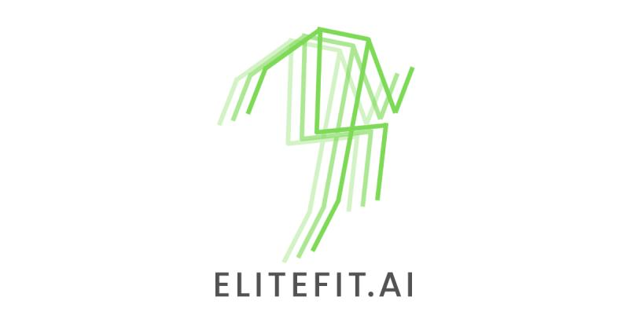

Data Science/Software Intern - Elitefit.AI 
August 2022 - Present
-
EliteFit.AI is democratising technology traditionally used by elite athletes to keep everyone fit.
www.elitefit.ai - Skills - Artificial Intelligence (AI) · REST APIs · Data Transformation · FastAPI · Python · Vue.js · Computer Vision · Machine Learning
Summer Intern - Deloitte

May 2022 - July 2022
- Worked with .NET Frameworks, Web Applications and Data Analytics software to monitor and solve client specific problem statements.
- Skills - ASP.NET · Web Development · Microsoft Power BI · Data Analytics
Summer Intern - Vedanta
April 2021 - June 2021
- Designing security oriented dashboards for a Vehicle Tracking System and a Video Analytics Application reducing critical response time thereby improving efficiency of risk mitigation.
- Skills - KPI Dashboards